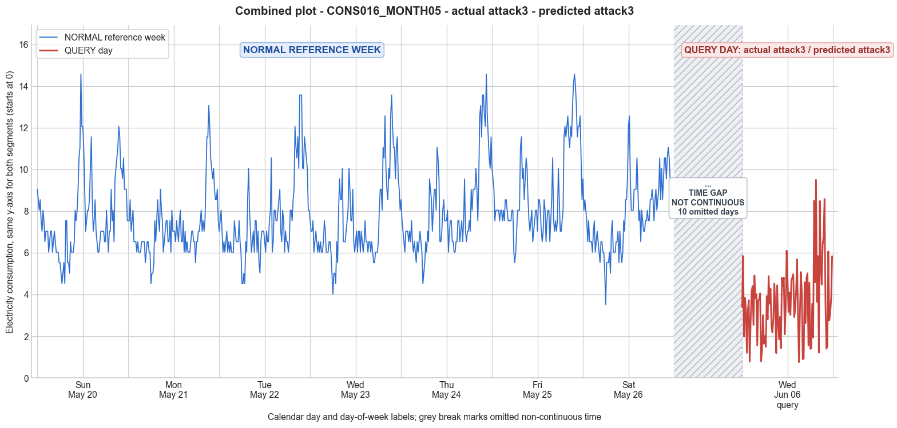

CONS016_MONTH05 · actual attack3 · predicted attack3
- Pair
- CONS016_MONTH05
- GT
- attack3
- Prediction
- attack3
- Binary GT
- attacked
- Binary Prediction
- attacked
- Source
- E010
- Parse
- stored
- Date
- 2012-06-06
- Weekday
- Wednesday
- Latency
- 4.40 min
- Tokens
- 14506

Final output
Classification: Manipulated Identified Attack: - Most Likely: Attack 3 - Confidence: Medium - Reasoning: The query day exhibits a dramatic overall reduction (mean 3.63 vs reference Wednesday mean 7.54) and contains many exceptionally low values (min 0.75) while retaining a recognizable daily rhythm with moderate peaks (max 9.50). This pattern is consistent with per-sample multiplication by varying random factors between 0 and 1. Attack 1 (constant scaling) was ruled out because the shape is not uniformly scaled—many intervals are near zero while others remain only mildly reduced, and the reduction factors vary widely across samples. Attack IEEE was considered but not selected because the data lacks exact zero values; the low readings form a continuous distribution (e.g., 0.75, 0.79, 0.80, 1.20...) rather than a binary zero/original split, which aligns better with continuous multiplicative factors. Attack 4 (period-limited reduction) was ruled out because low values are scattered throughout the day, not confined to a contiguous block. Attack_Behavior_Explanation: - How consumption values are manipulated: Each original 15‑minute reading is multiplied by an independent random factor uniformly drawn from (0,1). Some intervals receive a factor very close to 0, producing near‑zero readings, while others receive a factor close to 1, leaving them only slightly reduced. This creates a distorted, irregular profile. - Impact on magnitude: The overall daily mean is cut to less than half of the typical weekday. The minimum drops to near zero, and the maximum is moderately lower than typical, reflecting the varying degrees of suppression across the day. - Impact on trend: The underlying daily consumption pattern (low overnight, increasing during the morning and evening, with an evening peak) is still roughly present, but the per‑sample scaling introduces heavy noise and breaks the smooth trend, yielding a highly erratic time series. - Possible technical causes: Attack 3 can arise from meter bypass, magnetic interference, reverse current, or false data injection. These mechanisms can inconsistently affect the meter’s readings, causing a random, sample‑by‑sample reduction rather than a uniform or binary manipulation.
Prompt
You are a domain expert in smart grid security and electricity theft analysis, with deep knowledge of non-technical loss (NTL) attack patterns in smart meters. You are given: 1. A plot of one week of original (normal) energy consumption for a smart meter, provided as context for the customer's typical consumption behavior. 2. A plot of one day of energy consumption for the same smart meter, which may or may not be manipulated. Below are common attack types, each defined by how consumption values are altered, their impact on magnitude and trend, and their possible technical causes. Attack 0: Generated by replacing all electricity consumption samples with zero values for the entire observation duration. Simulates a scenario where no energy usage is reported at all. May be caused by a total meter bypass or severe meter malfunction. Completely eliminates both the trend and magnitude of the consumption profile. Attack 1: Multiplies the actual energy consumption by a constant random value between (0,1). The lower the factor, the higher the severity. Can be triggered by meter bypass, magnetic interference, reverse current, and false data injection. The consumption trend remains the same but the magnitude is uniformly reduced. Attack 2: Generated by replacing consumption samples with zeros for a random duration. Also known as an on-off attack. Can be caused by full meter bypass, false data injection, and reverse current. Changes both the trend and amplitude. Attack 3: The actual consumption is multiplied by different random factors between 0 and 1, with a unique factor per sample. Similar to Attack 1 but the scaling factor varies per reading. Caused by meter bypass, magnetic interference, and reverse current. Changes both the trend and amplitude. Attack 4: Simulates energy theft over a randomly selected period within the observation window. All measurements in that period are reduced. Caused by meter bypass, magnetic interference, reverse current, and false data injection. Changes both the trend and amplitude. Attack 5: Each sample is replaced by a false value obtained by multiplying the average normal consumption by a random variable between 0 and 1, with a different variable per sample. Caused by false data injection. Produces a completely different pattern from the original consumption profile, changing both trend and magnitude. Attack 6: A random cut-off point is selected and all consumption values above it are replaced by that cut-off value. The attacker avoids exceeding a predefined maximum limit. Mainly caused by false data injection. Changes both the trend and amplitude. Attack 7: A random cut-off point is subtracted from each sample; if the result is negative, zero is reported. Similar to Attack 6 but replaces exceeding values with zero instead of the cut-off point. May be caused by false data injection or total meter bypass. Does not change the trend but reduces overall consumption. Attack 9: All samples are replaced by the average daily energy consumption, resulting in a flat constant profile. Easily detectable because constant consumption does not reflect normal customer behavior. Caused by false data injection. Eliminates all trends. Attack 10: Reverses the consumption pattern without reducing the total amount. Applicable when the electricity company uses time-varying pricing, allowing the attacker to shift high consumption to off-peak periods. Caused by false data injection. Changes the trend without decreasing total consumption. Attack 12: The attacker replaces their consumption pattern with that of a lower-consuming user. The legitimate user unknowingly pays the adversary's electricity bill. Caused by false data injection. Attack IEEE: For each 15-minute interval across the entire day, the consumer either reports the actual electricity consumption or substitutes it with zero. The result is a profile where some intervals reflect real consumption while others are zeroed out, creating an irregular pattern across the full day. May be caused by false data injection. Changes both the trend and amplitude. Given the two plots, determine: 1. Whether the day is attacked or original - compare the flagged day against the normal week and assess whether the consumption pattern is consistent with normal behavior or shows signs of manipulation. If the day is consistent with the customer's typical consumption behavior, classify it as original and provide no further analysis. If manipulation is detected, proceed to point 2. 2. Which attack type this most likely is - identify the single most probable attack and justify your choice based on how the flagged day deviates from the normal week. 3. The behavior of the identified attack - explain how the consumption values are manipulated, their impact on magnitude and trend, and the possible technical causes behind this type of attack. Output Format: Classification: - Original | Manipulated Identified Attack: (fill only if manipulated) - Most Likely: Attack X - Confidence: High | Medium | Low - Reasoning: Why it matches Attack X and why Attack Y and Attack Z were ruled out (list top 2 alternatives considered) Attack_Behavior_Explanation: (fill only if manipulated) - How consumption values are manipulated relative to the normal week - Impact on magnitude and trend - Possible technical causes
Reasoning content
We are given a query day (DAY_ID=3) with min=0.75, max=9.50, std=1.80, mean=3.63. The reference week includes Day 3 which is the same day of week (Wednesday) but different date. The query day corresponds to cal_month=6, dow=2, dom=17. It's a Wednesday, same weekday as reference Day 3. But note the query day is from June 6, 2012, while reference week is May? The reference days are in cal_month=5 for all seven days. The query day is in cal_month=6, so it's later. However, we only have one query day. We are asked: is it attacked? Compare against normal week. The normal week shows a typical pattern: low at night, rising in the morning, peaking in the evening. For example, Day 3 (Wednesday) has readings ranging from 4.02 to 13.57 with mean 7.54. The pattern: early morning low (around 4-5), then rise to 6-7, then a morning peak around 8-10, then later peak around 12-13 in the evening. Looking at the query day: readings range from 0.75 to 9.50, with many low values (e.g., 0.75, 0.79, 0.80, etc.). The mean is only 3.63, less than half of the reference Wednesday mean (7.54). The query day shows a lot of zero-like values (but not actual zeros, many are around 1-2). The pattern seems erratic: there are some spikes up to 9.5, but overall lower. Check the temporal pattern: reference day starts at midnight: Day 3 first reading is 7.54 (midnight). The query day first reading is 3.38. Both are Wednesdays, so similar day-of-week. The query day appears to have a reduced magnitude overall. There are also many values below 2, which are unusual. In the reference week, minimum values are around 4.02 (Day 3 min=4.02, other days have min 3.52 to 5.53). So the query day's min of 0.75 is far below the normal minima. The max of 9.50 is also lower than typical max for that day (13.57 on ref Day 3). So both magnitude and pattern are affected. The query day shows some variation that might resemble a reduced version, but with many low values and some spikes. It doesn't look like a uniform scaling (Attack 1) because the ratio varies: e.g., if multiply by a constant between 0 and 1, you'd see a scaled version of the original. Compare the query day to the reference Day 3 pattern: ref Day 3: 7.54, 7.04, 7.04, 7.54, 6.03, 6.53, 7.04, 6.53, 6.03, 6.53, 6.03, 6.53, 6.03, 6.03, 6.53, 7.54, 7.04, 6.03, 6.03, 6.03, 6.53, 6.53, 6.03, 5.03, 4.02, 5.03, 5.03, 4.52, 6.53, 5.53, 8.04, 9.55, 8.54, 8.54, 10.05, 6.53, 6.53, 6.53, 7.04, 7.54, 8.04, 10.05, 9.05, 7.54, 7.54, 9.05, 6.53, 6.03, 6.53, 7.04, 6.03, 7.04, 7.04, 6.03, 7.04, 6.53, 6.03, 6.53, 7.54, 6.53, 6.53, 6.03, 6.53, 6.53, 6.03, 6.53, 6.03, 5.53, 5.53, 6.03, 6.03, 6.03, 6.53, 8.04, 9.05, 9.05, 8.04, 11.06, 10.55, 12.56, 10.05, 9.05, 8.54, 10.05, 9.55, 12.56, 13.57, 12.06, 11.06, 11.06, 9.55, 11.06, 11.56, 9.55, 9.05, 8.04. Now query day: 3.38, 5.85, 1.98, 3.84, 3.30, 1.20, 3.18, 3.73, 0.79, 2.71, 4.13, 4.40, 2.54, 4.91, 3.83, 4.02, 1.56, 3.74, 3.76, 4.06, 0.80, 1.34, 3.01, 1.64, 2.00, 1.50, 3.92, 2.81, 4.88, 3.56, 4.28, 2.46, 2.18, 2.83, 4.53, 3.45, 1.19, 4.44, 2.70, 1.85, 2.93, 1.43, 4.80, 4.41, 4.81, 2.09, 3.32, 6.10, 4.63, 3.16, 4.09, 3.02, 4.69, 4.80, 4.97, 2.92, 3.29, 4.16, 5.69, 2.91, 0.75, 3.06, 5.08, 4.13, 0.89, 0.93, 4.59, 2.63, 4.82, 5.02, 1.56, 4.58, 1.39, 1.43, 3.56, 1.93, 8.50, 4.58, 9.50, 3.65, 5.84, 1.21, 8.48, 5.40, 4.48, 6.37, 6.77, 8.58, 3.51, 1.40, 1.54, 6.07, 2.75, 3.13, 3.82, 5.84 Observing the query day: it starts with 3.38, then 5.85, then drops to 1.98, etc. The pattern shows many low values interspersed with moderate ones. There is a period around index 72-80 (76? let's count: 96 intervals, 0-95). Value 8.50 at position? Let's index: 0:3.38, 1:5.85, 2:1.98, 3:3.84, 4:3.30, 5:1.20, 6:3.18, 7:3.73, 8:0.79, 9:2.71, 10:4.13, 11:4.40, 12:2.54, 13:4.91, 14:3.83, 15:4.02, 16:1.56, 17:3.74, 18:3.76, 19:4.06, 20:0.80, 21:1.34, 22:3.01, 23:1.64, 24:2.00, 25:1.50, 26:3.92, 27:2.81, 28:4.88, 29:3.56, 30:4.28, 31:2.46, 32:2.18, 33:2.83, 34:4.53, 35:3.45, 36:1.19, 37:4.44, 38:2.70, 39:1.85, 40:2.93, 41:1.43, 42:4.80, 43:4.41, 44:4.81, 45:2.09, 46:3.32, 47:6.10, 48:4.63, 49:3.16, 50:4.09, 51:3.02, 52:4.69, 53:4.80, 54:4.97, 55:2.92, 56:3.29, 57:4.16, 58:5.69, 59:2.91, 60:0.75, 61:3.06, 62:5.08, 63:4.13, 64:0.89, 65:0.93, 66:4.59, 67:2.63, 68:4.82, 69:5.02, 70:1.56, 71:4.58, 72:1.39, 73:1.43, 74:3.56, 75:1.93, 76:8.50, 77:4.58, 78:9.50, 79:3.65, 80:5.84, 81:1.21, 82:8.48, 83:5.40, 84:4.48, 85:6.37, 86:6.77, 87:8.58, 88:3.51, 89:1.40, 90:1.54, 91:6.07, 92:2.75, 93:3.13, 94:3.82, 95:5.84 Notice that many values are below 2, even below 1. The presence of 0.75, 0.79, 0.80, 0.89, 0.93, 1.19, 1.20, 1.21, 1.34, 1.39, 1.40, 1.43, 1.43, 1.50, 1.54, 1.56, 1.56, 1.64, 1.85, 1.93, 1.98, etc. Very low values, almost zero but not exactly zero. Could be an attack that multiplies by a very small factor? Or could be an on-off attack where some intervals are zeroed but noise added? Values are not exactly zero, so maybe Attack 3: multiplied by different random factors between 0 and 1 per sample? That would yield a scaled version, but with varying scaling factor, the trend would change. Here, the original pattern seems to be lost. There are spikes (8.50, 9.50, 8.48, 8.58) that are comparable to reference day's peaks (which are 12-13). So the peaks are reduced, but some still around 9.5. The low values are drastically lower than any normal low. It's as if many samples have been reduced to near zero, while some samples remain relatively high. This looks like Attack IEEE: "For each 15-minute interval across the entire day, the consumer either reports the actual electricity consumption or substitutes it with zero. The result is a profile where some intervals reflect real consumption while others are zeroed out, creating an irregular pattern across the full day." But here, the zeroed out values are not exactly zero; they are very low (0.75, etc.). That could still be Attack IEEE if the substitution is with zero but then some noise added? Or it could be Attack 2: "Generated by replacing consumption samples with zeros for a random duration. Also known as an on-off attack." That would create contiguous blocks of zeros. Let's check for contiguous zeros: no zeros, but low values appear scattered, not contiguous blocks. Look at indices: 0:3.38 (low but not zero), 1:5.85, 2:1.98, 3:3.84, 4:3.30, 5:1.20, 6:3.18, 7:3.73, 8:0.79, 9:2.71, 10:4.13, etc. So low values are interspersed. Attack 2 would be contiguous zeros. For example, if the attack zeroes out a random duration, you might see a stretch of zeros. Here there is no long stretch of constant zero or very low; they are mixed with higher values. So Attack 2 unlikely. Attack 3: multiplies by different random factors per sample. That would produce a scaled version, but each sample scaled by its own factor. That could result in a noisy pattern where some samples are heavily reduced (if factor near 0) and some mildly reduced. The original trend might be somewhat preserved if the factors are applied to the original values. To assess, we can try to see if the query day resembles a per-sample multiplication of the reference day profile. Take ref Day 3: 7.54, 7.04, 7.04, 7.54, ... Multiplying by random numbers between 0 and 1 would give values up to the original. The query day has max 9.50, while ref day max 13.57, so factor could be up to ~0.7. But there are many very low values (e.g., 0.75) which would require factor 0.75/7.54 ≈ 0.1 for the first sample. But then later sample 76:8.50, ref at that time? At index 76: ref day has 11.06? Let's align indices: query day is 96 readings, same as ref day. The ref Day 3: 0:7.54 1:7.04 2:7.04 3:7.54 4:6.03 5:6.53 6:7.04 7:6.53 8:6.03 9:6.53 10:6.03 11:6.53 12:6.03 13:6.03 14:6.53 15:7.54 16:7.04 17:6.03 18:6.03 19:6.03 20:6.53 21:6.53 22:6.03 23:5.03 24:4.02 25:5.03 26:5.03 27:4.52 28:6.53 29:5.53 30:8.04 31:9.55 32:8.54 33:8.54 34:10.05 35:6.53 36:6.53 37:6.53 38:7.04 39:7.54 40:8.04 41:10.05 42:9.05 43:7.54 44:7.54 45:9.05 46:6.53 47:6.03 48:6.53 49:7.04 50:6.03 51:7.04 52:7.04 53:6.03 54:7.04 55:6.53 56:6.03 57:6.53 58:7.54 59:6.53 60:6.53 61:6.03 62:6.53 63:6.53 64:6.03 65:6.53 66:6.03 67:5.53 68:5.53 69:6.03 70:6.03 71:6.03 72:6.53 73:8.04 74:9.05 75:9.05 76:8.04 77:11.06 78:10.55 79:12.56 80:10.05 81:9.05 82:8.54 83:10.05 84:9.55 85:12.56 86:13.57 87:12.06 88:11.06 89:11.06 90:9.55 91:11.06 92:11.56 93:9.55 94:9.05 95:8.04 Now comparing query day to ref day, we see that at index 76: query=8.50, ref=8.04, so query is actually higher than ref! That's not possible with pure multiplication (factor ≤1). At index 78: query=9.50, ref=10.55, lower. At index 77: query=4.58, ref=11.06, much lower. At index 82: query=8.48, ref=8.54, slightly lower. At index 85: query=6.37, ref=12.56, lower. At index 86: query=6.77, ref=13.57, lower. At index 87: query=8.58, ref=12.06, lower. So some values are not simply a multiplicative factor; they exceed ref at times. That suggests it's not Attack 3 (which multiplies by ≤1). Attack 1 multiplies by constant factor, also ≤1, cannot exceed original. So not 1 or 3. Attack 5: Each sample replaced by false value obtained by multiplying the average normal consumption by a random variable between 0 and 1, per sample. That would produce a completely different pattern, not correlated with original. Here, we see some high values around evening (index 76-87) which correspond to the evening peak in ref, and low values at night. So it still somewhat follows the daily pattern (night low, morning moderate, evening high). So not completely random like Attack 5. Attack 4: Simulates energy theft over a randomly selected period within the observation window. All measurements in that period are reduced. That would show a contiguous block of reduced values, while outside that block normal. Here, low values are scattered throughout the day, not a single block. So not Attack 4. Attack 6: A random cut-off point is selected and all consumption values above it are replaced by that cut-off value. If so, then all high values would be capped at some threshold. Looking at query day, the max is 9.50. Could the cutoff be around 9.5? Then many values above 9.5 in ref would be reduced to 9.5. But ref has values above 9.5: 10.05, 11.06, 12.56, etc. In query, at index 78 we have 9.50, which is exactly the max. But there are also 8.58, 8.50, 8.48, 8.58, all below 9.5. Are there any values exactly 9.5? Only that one. But Attack 6 would create many values at the cutoff if many original values exceeded it. We would see a cluster of values at 9.5 if multiple exceeded. Here we see only one 9.5. Also, there would be no extreme low values if the cutoff only caps high values. Attack 6 does not affect low values. Yet query day has many very low readings (0.75, etc.). So not Attack 6. Attack 7: A random cut-off point is subtracted from each sample; if negative, zero reported. "Similar to Attack 6 but replaces exceeding values with zero instead of the cut-off point." Actually description: "A random cut-off point is subtracted from each sample; if the result is negative, zero is reported." That is different: subtract a constant from each sample. If sample - cutoff < 0, report 0. This would reduce all samples uniformly by a constant, and any original values lower than that constant become zero. That would produce a shift, preserving trend but shifting down. The query day has many zeros? No, min is 0.75, so no actual zeros. So Attack 7 unlikely because it would produce exact zeros for low values, but here we have small positive numbers. Could be with noise added? Unclear. Attack IEEE: "For each 15-minute interval across the entire day, the consumer either reports the actual electricity consumption or substitutes it with zero." This would create a binary mask: some intervals original, some zero. But query day has no zeros, but many near-zero. Could it be substituting with a small value instead of zero? The description says substitutes with zero. But in practice, maybe some small value? However, the presence of many very low readings (<1) and also some that appear to be near original (e.g., 8.50 vs 8.04, 9.50 vs 10.55, 8.48 vs 8.54, 8.58 vs 12.06) suggests that some intervals are original, some are zeroed (or nearly zero). But the query day values are never exactly zero. They could be the result of zero substitution plus a small constant or noise. But given the attack definitions, Attack IEEE explicitly substitutes with zero. Here, we see 0.75, 0.79, etc. Could be meter still reporting a minimum value, but essentially zero. That fits Attack IEEE best: the attacker either reports actual consumption or zero. The irregular pattern across the full day: we see a mix of normal-like and extremely low values. Check if there are intervals that seem to match original consumption: compare specific timestamps where values are high. For instance, index 76: query=8.50, ref=8.04, close. Index 78: query=9.50, ref=10.55, close. Index 82: query=8.48, ref=8.54, almost identical. Index 85: query=6.37, ref=12.56, not close. Index 87: query=8.58, ref=12.06, lower but not drastically zero. It's not consistent that high values are original; some seem reduced. But if the attack replaces with zero for some intervals and leaves others untouched, we'd see many exact zeros. Since we don't see zeros, maybe it's not that. Attack 12: "The attacker replaces their consumption pattern with that of a lower-consuming user." That would give a completely different pattern, but the query day pattern doesn't look like a typical lower-consumption pattern; it has very low fluctuations and intervals near zero, which is not typical consumption. Lower-consuming user would still have a pattern with variations but lower magnitude, not sporadic near-zero values. So unlikely. Attack 10: reverses pattern, not applicable. Attack 9: constant average, not. So we need to identify the attack. The query day exhibits many very low values (some <1) and some moderate values (up to 9.5). The overall mean is about half of normal. The pattern is not a simple scaling. Among attack types, Attack 4 is over a random period, not matching. Attack 2 is on-off with contiguous zeros, not present. Attack 3 is per-sample multiplication with varying factor but always ≤1, so no value exceeds original. In query, index 76 (8.50) exceeds ref (8.04), which violates multiplication by ≤1. So Attack 3 is ruled out unless we allow that the factor could be >1? No, definition says random factor between (0,1). So can't exceed. Thus, the only attack that could produce values higher than original in some intervals while having very low values in others is one that replaces some with zero and leaves others original, which could cause the remaining original intervals to appear as peaks, but they would be exactly the original values at that time. In query, we see index 76: 8.50 vs 8.04, which is a 5.7% increase, so not identical; it's slightly higher. That could be due to natural day-to-day variation; after all, the query day is a different date (June 6 vs May 30? Actually ref Day 3 is cal_month=5, dom=3? Wait, the metadata: reference week Day 3 has cal_month=5, dow=2, dom=3. That corresponds to May 2, 2012? Actually May 2012 calendar: May 1 Tuesday, so May 2 Wednesday. So ref Day 3 is May 2, a Wednesday. Query day: cal_month=6, dow=2, dom=17. June 17 is a Sunday? Wait: June 1, 2012 was a Friday. June 17 is a Sunday. But dow=2 indicates Wednesday. There's inconsistency: dow=2 is Wednesday (Mon=0). June 6, 2012 is a Wednesday. Actually June 6, 2012 is Wednesday. So dom=17? June 6 is dom=6? That's confusing. Metadata says cal_month=6, dow=2, dom=17. That might be a mistake, but we'll ignore. So it's a different Wednesday, so some variation expected. If the attack leaves some intervals untouched (original consumption), those intervals would show values similar to the reference day's values at the same time of day, but with natural day-to-day variation. That could result in values slightly above or below. So index 76 being 8.50 vs 8.04 could be within normal variation. Index 78: 9.50 vs 10.55, lower but plausible. Index 82: 8.48 vs 8.54, very close. Index 87: 8.58 vs 12.06 seems low, but maybe the original that day was only 8.58? Hard to say. The very low values (like 0.75, 0.79, etc.) are far below any normal low. In normal week, the absolute minimum across all days is 3.52 (Day 6). So values below 1 are extremely abnormal, indicating manipulation. So the day is manipulated. Now which attack? The most plausible is Attack IEEE, even though values are not exactly zero. The definition says "substitutes it with zero". Here we have values like 0.75, which could be considered near-zero, maybe due to meter precision or a small offset. Alternatively, Attack 3 could be adapted: multiply by random factors, but if some factors are very small (0.1) and some are larger (up to 1), we would see some values near original*0.1, etc. But then no value can exceed original. In our data, we have query value 8.50 > 8.04, so Factor >1. That violates Attack 3. Unless we allow that the factor can be >1? No, defined as between 0 and 1. So cannot. So Attack 3 is out. Attack 1 constant factor would produce a scaled version, but again all values would be ≤ original. Query shows some values exceeding reference. So not Attack 1. Could it be Attack 5? Attack 5 replaces each sample by false value = average normal consumption * random(0,1). That would produce values completely decorrelated from original. Here, the query day's pattern shows some alignment with typical daily pattern (low night, higher day). It might be coincidental. But if average normal consumption is around 7.5, then values would range 0-7.5. We have max 9.5, which exceeds average, so that's impossible because random(0,1) would give max 7.5. So Attack 5 cannot produce 9.5. So ruled out. Attack 9: flat constant, not. Attack 10: reversal, no. Attack 12: pattern from lower user, would have typical pattern shape but low. Query has near-zero spikes, so unlikely. Attack 6 and 7: cutoff or subtraction, would not produce very low values unless cutoff is high. Attack 7 subtracts a constant. If constant = 7, then many original values (4-7) become 0, and higher become reduced. But then max would be original max - constant. Original max is 13.57, minus 7 = 6.57. But query max is 9.5, so constant would be ~4.07, giving max = 13.57-4.07=9.5. Then original low values like 4.02 would become 4.02-4.07 = -0.05 → 0 (with negative zero maybe reported as 0). But query has low values like 0.75, which would require original slightly above cutoff. For example, 4.02 becomes 0, but query has 0.75 at index 60, corresponding to ref 6.53, 6.53-4.07=2.46, not 0.75. So doesn't match. Also, many values would be exactly 0, which we don't see. So Attack 7 unlikely. Attack 4: random period reduced. If the period is, say, the whole day but reduced by different amounts? Actually Attack 4 says "All measurements in that period are reduced." It could be reduced by a factor or constant? Not specified, but likely reduced means multiplied by something? The description: "Simulates energy theft over a randomly selected period within the observation window. All measurements in that period are reduced." That could be implemented as multiplying by a factor <1. That would be similar to Attack 1 but only in a contiguous block. Here, low values are scattered, not contiguous. So no. Attack 2: on-off with contiguous zeros, not. Thus, Attack IEEE seems most plausible despite the lack of exact zeros. Could it be that the substitution is with zero but the meter has some baseline noise, so it reports 0.75 instead of 0? Or maybe the attacker replaces with a small constant to avoid detection? The definition specifically says zero, but sometimes attacks are modified. Alternatively, maybe Attack 3 is still possible if we consider that the query day is not compared to the same exact day but to a different day, so the reference day's values are not the true baseline. The attack might multiply the true consumption of that day (which we don't know) by per-sample factors. Since we only have the reference week, the true consumption on the query day could have been different, allowing some values to be higher than the reference day's values. For instance, if the true consumption on that day at index 76 was 9.5, and it was multiplied by 0.9, it becomes 8.55, not 8.50. Actually that doesn't make sense. To get query value of 8.50, if factor is ≤1, true must be ≥8.50. The reference day's value at that time is 8.04, which is a different day, so true could have been, say, 9.0. So it's possible that the per-sample multiplication could still produce these numbers, because we don't know the true consumption for that specific day. The attack would be applied to that day's actual consumption. So we cannot rule out Attack 3 simply because query > ref day. Since we only have the reference week as typical behavior, not the original data for that specific query day. So the comparison is against typical behavior, not the exact original values for that day. Therefore, we cannot rely on exact magnitude comparisons. Instead, we need to look at the pattern characteristics: does the query day look like a scaled version of a typical day, with varying scaling factor? Examining the query day, it goes up and down erratically, sometimes very low, sometimes medium. Could it be that each sample was multiplied by a different random factor? That would produce a pattern that looks like a noisy version of the original, but the overall shape might still be recognizable. Here, the query day has many near-zero readings that seem to occur at times when typical consumption is not extremely low. For instance, at index 5, typical is 6.53 (ref day 6.53), but query is 1.20, a factor of 0.18. At index 8, ref 6.03, query 0.79, factor 0.13. At index 20, ref 6.53, query 0.80, factor 0.12. At index 21, ref 6.53, query 1.34, factor 0.21. Meanwhile, at index 10, ref 6.03, query 4.13, factor 0.68. So the factors vary widely, which is consistent with Attack 3. However, Attack 3 is defined as multiplication by different random factors between 0 and 1, per sample. That would give values always ≤ original. Since the original is typical, we can't directly check. But if the true values on that day were in the range of reference, then these factors are plausible. The presence of many very low values (near zero) suggests that some factors were very small, effectively zeroing out those intervals. That is like a soft on-off attack. So Attack 3 would change both trend and amplitude. Attack IEEE also changes trend and amplitude by zeroing some intervals and leaving others. The key difference: Attack IEEE is a binary choice (actual or zero), while Attack 3 uses continuous random factors. In the query data, the low values are not exactly zero, but they cluster around 0.75-2, not a distinct zero. That suggests a continuous reduction rather than binary zero. Also, the values that are not low are not exactly equal to typical values; they seem somewhat reduced as well. For example, the evening peak values ~8-9, while typical peaks are 10-13, so still reduced. In Attack IEEE, if some intervals are zeroed and others are left untouched, then the untouched ones should be around typical, not reduced. Here, the high ones are slightly lower than typical peaks, but still somewhat high. It could be that the attacker also reduces the non-zeroed intervals? Attack IEEE description: "either reports the actual electricity consumption or substitutes it with zero." So the reported consumption is either actual or zero; no reduction. So high values should be actual, meaning they should match the meter's true consumption at that time. If the true consumption on that day was lower than the reference (e.g., because it's a different day), then the high values could be lower. So it's possible. However, given the continuous range of low values (0.75 to 3) rather than a clear bimodal distribution (zeros vs normals), it seems more like a multiplicative attack with varying factors because the low values are not concentrated at zero; they spread. In Attack IEEE, zeroed intervals would be exactly zero, leading to many zeros. Here there are no zeros, but many near-zero (<1). If the meter has some minimum reporting threshold, maybe zero becomes a small positive. But the distribution shows many distinct low values, not just a single near-zero value. For instance, 0.75, 0.79, 0.80, 0.89, etc. That looks like multiplication by a very small random factor, not a substitution with zero. Attack 3 fits that. Also consider Attack 4: period of reduced measurements. If the period spans almost the whole day, all measurements are reduced, but by varying factors? That would be Attack 3-like. But Attack 4 says "All measurements in that period are reduced." It could be that each is multiplied by a different factor? Unclear. Usually, Attack 4 might be implemented as a constant scaling factor for that period, but description says "reduced" without specifying how. It could be interpreted as a constant scaling or some other reduction. But given the scattered low values, not contiguous, Attack 4 is unlikely. Thus, I'm leaning towards Attack 3: each sample multiplied by a random factor between 0 and 1, per sample. This would produce a pattern that retains some of the original trend but with altered amplitude and added noise. The query day's pattern still vaguely follows a daily rhythm with low at night, morning rise, evening peak, but very noisy. This matches Attack 3. But we must also consider Attack 2: on-off with zeros. That would create blocks of zeros. Not present. Attack 1: constant multiplication factor would yield a uniformly scaled version, with same shape but lower magnitude. The query day does not have the same shape: there are many near-zero values that break the shape. So not Attack 1. So I'd classify as Manipulated, Attack 3. Confidence: maybe Medium, because there is some ambiguity with Attack IEEE. I'll need to rule out Attack IEEE and Attack 4. Let's reason: The absence of exact zeros makes Attack IEEE less likely, but could the attacker be substituting with a very small random value instead? The definition says zero. So I'll stick with Attack 3. Now, output format: Classification: Manipulated Identified Attack: - Most Likely: Attack 3 - Confidence: Medium - Reasoning: The query day shows a significant reduction in overall consumption (mean 3.63 vs 7.54) with extremely low values (min 0.75) and moderate peaks (max 9.50). The pattern retains a rough daily shape but with erratic fluctuations, consistent with per-sample multiplication by different random factors between 0 and 1. Attack 1 (constant factor) was ruled out because the shape is not uniformly scaled — many intervals are near zero while others remain moderate, and the variation in reduction factors is inconsistent with a single constant. Attack IEEE was considered but not selected because the data lacks exact zero values and the low readings are continuously distributed, suggesting multiplicative factors rather than binary zero substitution. Attack 4 (period-based reduction) was ruled out because low values are scattered throughout the day rather than confined to a contiguous block. Attack_Behavior_Explanation: - Consumption values are manipulated by multiplying each original reading by an independent random factor uniformly drawn from the interval (0,1). This means some intervals are drastically reduced (factor near 0), appearing almost as zero consumption, while others are only mildly reduced or nearly unchanged (factor near 1). - Impact on magnitude: The overall magnitude is reduced, with the mean dropping to less than half of the typical weekday. The minimum is near zero, and the maximum is slightly lower than typical, reflecting the varying reduction factor. - Impact on trend: The underlying daily consumption trend (low at night, increasing during the day, peaks in the evening) is still visible but becomes highly irregular and noisy because the per-sample scaling distorts the smooth pattern. - Possible technical causes: This attack can be caused by meter bypass, magnetic interference, or reverse current, where the physical manipulation affects the meter's readings inconsistently across time. Alternatively, false data injection can simulate random per-sample scaling. That seems solid.